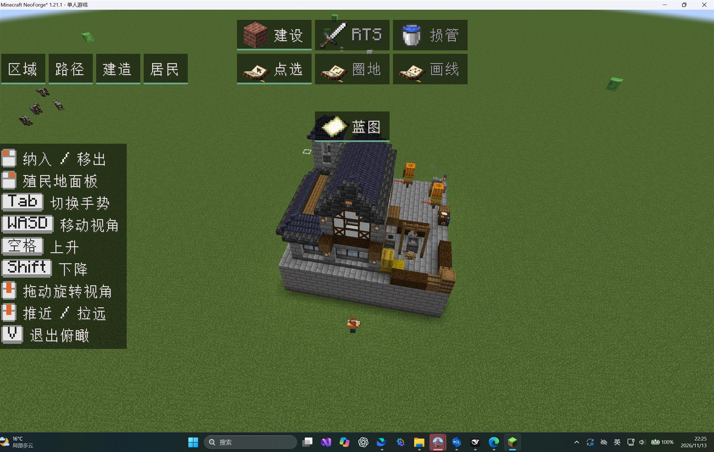
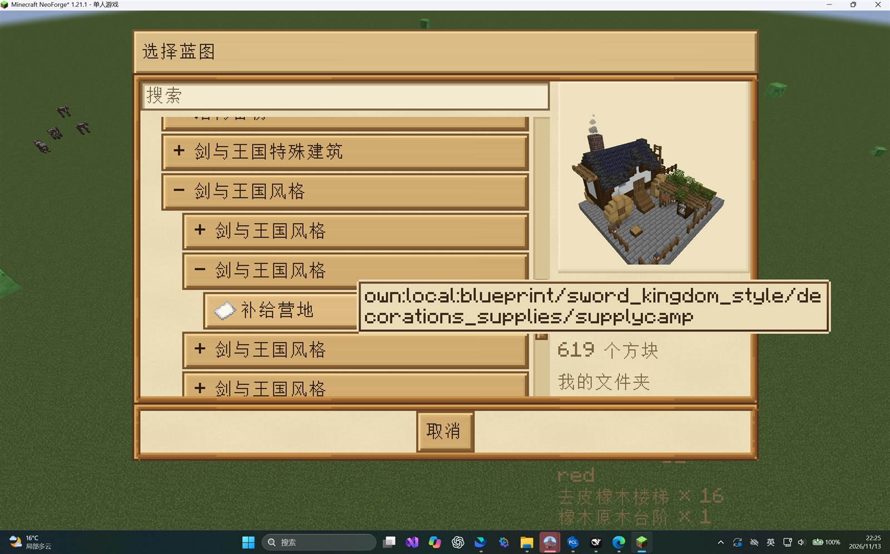

已实现
Do 材质精确预览
预览世界从蓝图方块实体读取 textureData，Do 不再显示为缺失材质。
原生建造链路
Blueprint → 订单 → 工地 → 逐块放置，建筑工完整使用 Folkways 工作流。
Materials Integration
Do 方块按主材质掉落整合资源；分拣台作为殖民地工作站产出实际建材。
大蓝图不 OOM
本地蓝图惰性加载，启动时只索引路径；7368 个蓝图可一次安装。
中文名称
ASCII 文件名保持不变，界面通过名称表显示中文；不破坏 ResourceLocation。
地面方块可选
blocksolidsubstitution 通过 ground_blocks.json 按包/单栋选择，不再随机。
实机验证
7368本地蓝图全部读取/解析，missing=0 invalid=0
78/783vines 建筑逐块验证，verifyMismatch=0
173/173Do 精确方块比较通过
0全部安装启动 OOM



已知问题
Do 原版方块导致转换不完整
部分剑与王国建筑包里包含 Domum Ornamentum 原版包中已有的方块。转换器会优先保留原始 block_state 与 textureData，但这意味着少数方块可能无法完全转换成 Do 材质，或会回退为普通原版方块。摆放前请先看幽灵预览。
供货建筑仍存在未知 bug
“补给营地 / Supply Camp”等供货建筑目前仍有未定位的问题，可能影响正常游玩流程，例如蓝图可以预览但无法正常下单或工地无法继续。重要存档中请先备份，不要把它当作核心建筑。
安装
从 v1.0.0 Release 下载分享包，解压后：
mods/folkways_ornamentum-1.0.0.jar
mods/folkways-vanilla-neoforge-1.21.1-*.jar ← 必须使用分享包内的补丁核心
mods/materials_integration-2.8.jar
folkways/blueprint/<pack>/ ← 转换后的建筑包
config/folkways_ornamentum/blueprint_names_zh_cn.json旧版 folkways-vanilla 核心没有惰性加载、64 MB 读取上限和上传名称修复；只替换附属 jar 仍然会出错。
来源与致谢
- IzakyL / Folkways：Colony 框架与原生工作流，MIT。
- Domum Ornamentum：材质化建筑方块。
- Materials Integration / 22angle：资源统合与分拣台。
- 剑与王国建筑包作者、汉化作者：建筑蓝图和语言来源。
本项目是非官方兼容工作，不是 Folkways 的官方分支。